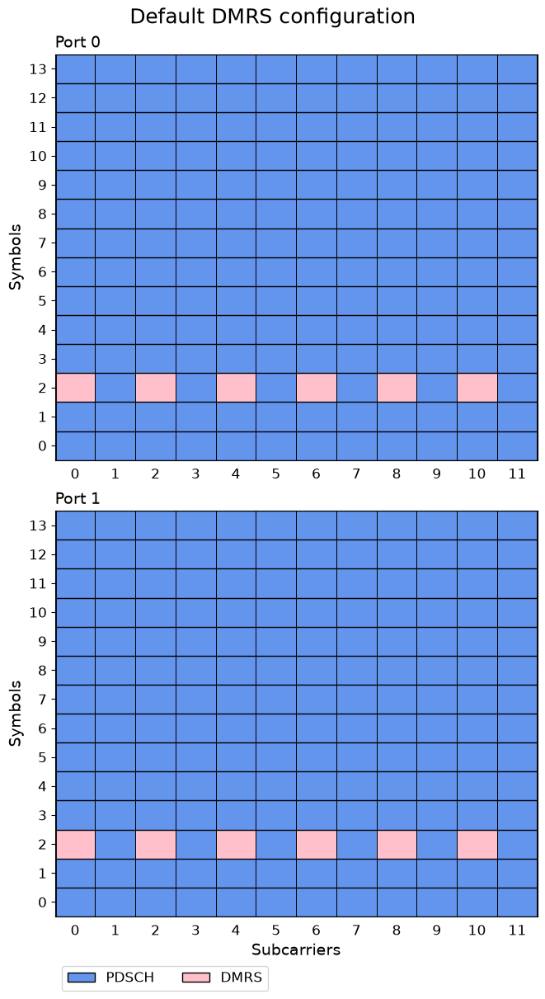
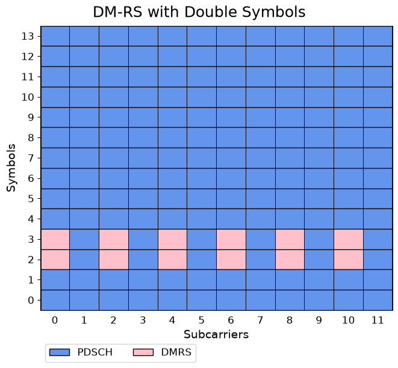
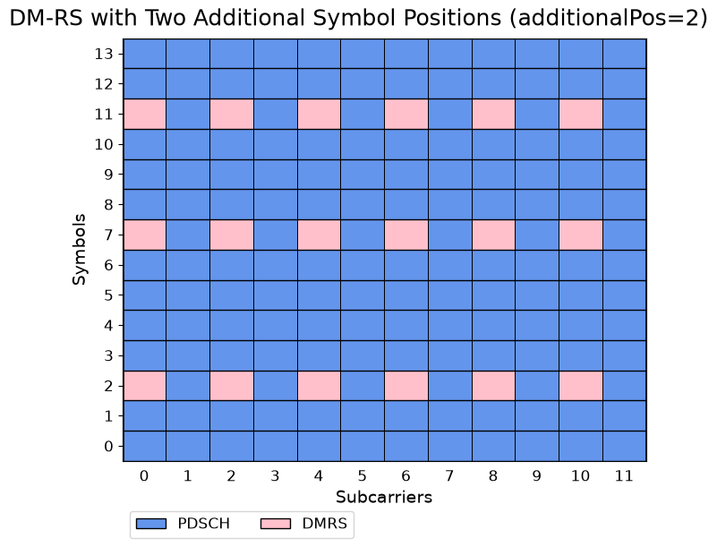
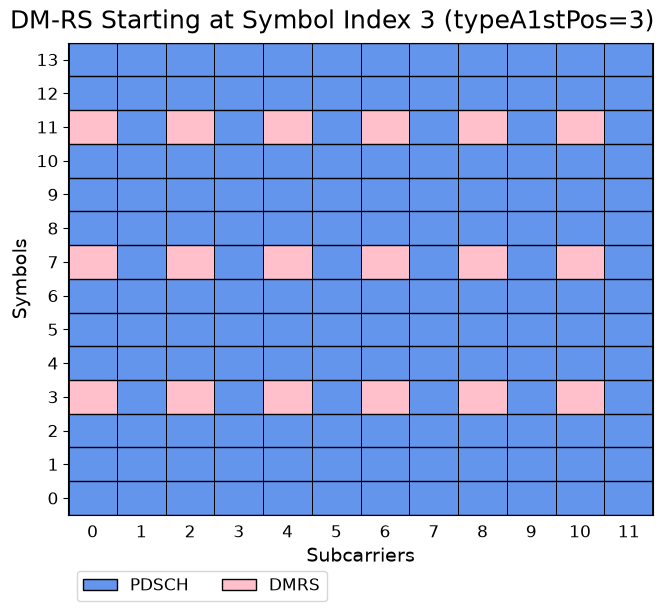
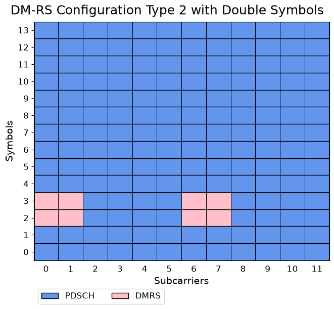
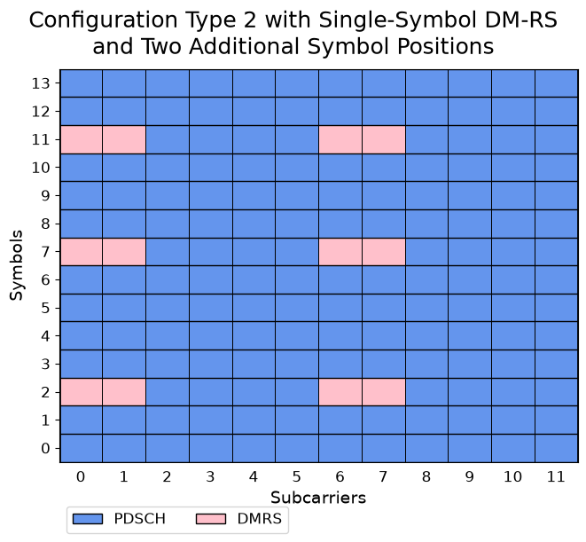
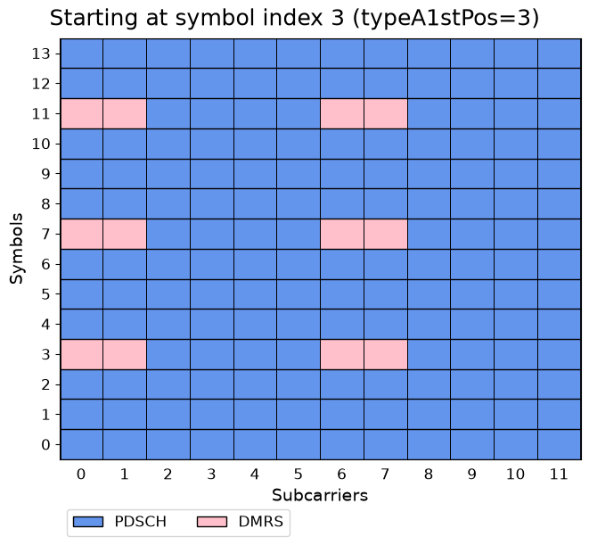
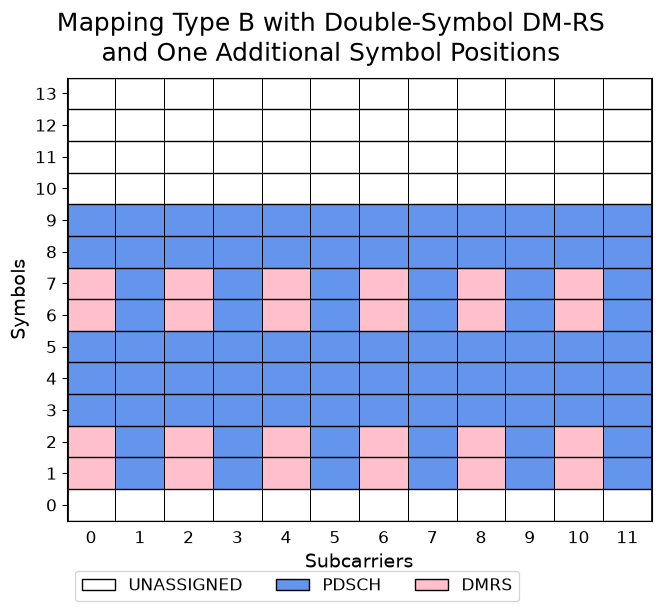
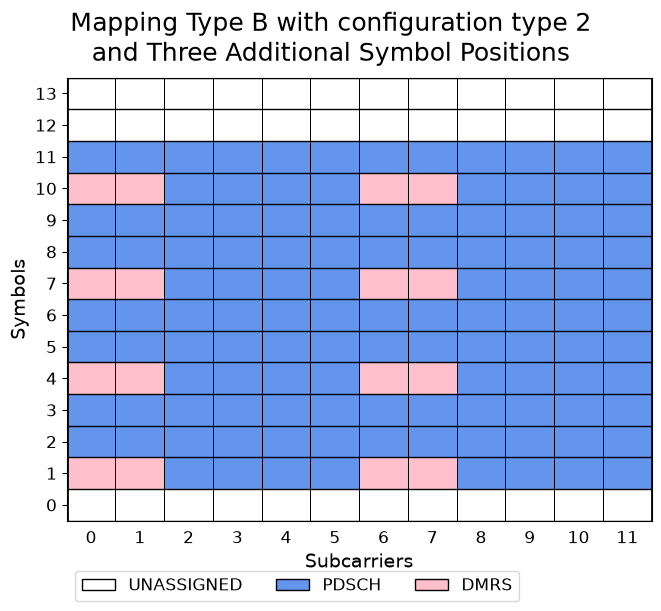

Exploring PDSCH DM-RS Configurations
This notebook demonstrates how different PDSCH Demodulation Reference Signal (DM-RS) configurations affect resource-element allocation.
Starting from a simple PDSCH configuration, the notebook progressively explores several DM-RS options, including:
DM-RS Configuration Types 1 and 2
Single-symbol and double-symbol DM-RS
Additional DM-RS symbol positions (
additionalPos)Different Type-A starting positions (
typeA1stPos)Mapping Type A and Mapping Type B transmissions
For each configuration, a PDSCH resource grid is created and visualized so that the placement of DM-RS resource elements can be examined directly. By comparing these allocation maps, you can see how DM-RS density, symbol locations, and frequency-domain patterns change with different parameter settings.
The examples provide a practical way to understand how NeoRadium implements the DM-RS configurations defined by the 5G NR standard and how those configurations influence the resources available for PDSCH data transmission.
[1]:
import numpy as np
import scipy.io
from neoradium import BandwidthPart, PDSCH
[2]:
# Create a bandwidth part with 5 resource blocks and 30 kHz subcarrier spacing
bwp = BandwidthPart(numRbs=5, spacing=30)
bwp.print()
Bandwidth Part Properties:
Resource Blocks: 5 RBs starting at 0 (60 subcarriers)
Subcarrier Spacing: 30 kHz
CP Type: normal
Interleaving: No
Bandwidth: 1.8 MHz
symbolsPerSlot: 14
slotsPerSubFrame: 2
nFFT: 1024
frameNo: 0
slotNo: 0
[3]:
# Create a 2-layer PDSCH with mapping type A (default) using all OFDM symbols and all PRBs in the BWP
pdsch = PDSCH(bwp, numLayers=2)
pdsch.setDMRS() # Default DM-RS Configuration
pdsch.print()
# Initialize the resource grid of the PDSCH object. This creates an internal Grid object and
# populates it with the DM-RS values
pdsch.initGrid()
# Print some statistics about the PDSCH resource grid
print("Number of resource elements:")
stats = pdsch.grid.getStats()
for key, value in stats.items(): print(" %-15s %d"%(key+":", value))
# Draw grid map for both layers
pdsch.grid.drawMap(pdsch.portSet, title="Default DMRS configuration");
PDSCH Properties:
mappingType: A
nID: 1
rnti: 1
numLayers: 2
numCodewords: 1
modulation: 16QAM
PRG Size: Wideband
portSet: 0 1
symSet: 0 1 2 3 4 5 6 7 8 9 10 11 12 13
prbSet: 0 1 2 3 4
DMRS:
configType: 1
nIDs: []
scID: 0
sameSeq: True
symbols: Single
typeA1stPos: 2
additionalPos: 0
cdmGroups (port:cdm): 0:0 1:0
deltaShifts (port:cdm): 0:0 1:0
numCdmGroupsWithoutData: 1
symSet: 2
REs (before shift): 0 2 4 6 8 10
epreRatioDb: 0 (dB)
Number of resource elements:
GridSize: 1680
PDSCH: 1620
DMRS: 60

[4]:
# Let's see an example of DM-RS with double symbols (symbols=2) - (shown for one layer only)
pdsch.setDMRS(symbols=2)
# Reinitialize the PDSCH resource grid because the DM-RS configuration has changed
pdsch.initGrid()
# Draw grid map for first layer
pdsch.grid.drawMap(title="DM-RS with Double Symbols");

[5]:
# Use two additional symbol positions for DM-RS (additionalPos=2)
pdsch.setDMRS(additionalPos=2) # Using setDMRS
pdsch.initGrid()
# Draw grid map for first layer
pdsch.grid.drawMap(title="DM-RS with Two Additional Symbol Positions (additionalPos=2)");

[6]:
# Same as above but starting at the third position (typeA1stPos=3)
# Note that this works only for PDSCH with Mapping Type A
pdsch.setDMRS(additionalPos=2, typeA1stPos=3)
pdsch.initGrid()
pdsch.grid.drawMap(title="DM-RS Starting at Symbol Index 3 (typeA1stPos=3)");

[7]:
# Now let's see an example of DM-RS configuration type 2 and double DMRS symbols (symbols=2)
pdsch.setDMRS(configType=2, symbols=2)
pdsch.initGrid()
pdsch.grid.drawMap(title="DM-RS Configuration Type 2 with Double Symbols");

[8]:
# Using 2 additional symbol positions for DMRS (additionalPos=2)
pdsch.setDMRS(configType=2, additionalPos=2)
pdsch.initGrid()
pdsch.grid.drawMap(title="Configuration Type 2 with Single-Symbol DM-RS\nand Two Additional Symbol Positions");

[9]:
# Same as above, but starting at the third position (typeA1stPos=3)
# Note that this works only for PDSCH with Mapping Type A
pdsch.setDMRS(configType=2, additionalPos=2, typeA1stPos=3)
pdsch.initGrid()
pdsch.grid.drawMap(title="Starting at symbol index 3 (typeA1stPos=3)");

[10]:
# Now using a PDSCH with mapping type B (DM-RS symbols are relative to PDSCH start symbol)
# This PDSCH uses OFDM symbols 1 through 9.
pdsch = PDSCH(bwp, mappingType='B', numLayers=2, symStart=1, symLen=9)
# Default DM-RS settings with one additional symbol position and double symbols
pdsch.setDMRS(additionalPos=1, symbols=2)
pdsch.initGrid()
pdsch.print()
pdsch.grid.drawMap(title="Mapping Type B with Double-Symbol DM-RS\nand One Additional Symbol Positions");
PDSCH Properties:
mappingType: B
nID: 1
rnti: 1
numLayers: 2
numCodewords: 1
modulation: 16QAM
PRG Size: Wideband
portSet: 0 1
symSet: 1 2 3 4 5 6 7 8 9
prbSet: 0 1 2 3 4
DMRS:
configType: 1
nIDs: []
scID: 0
sameSeq: True
symbols: Double
typeA1stPos: 2
additionalPos: 1
cdmGroups (port:cdm): 0:0 1:0
deltaShifts (port:cdm): 0:0 1:0
numCdmGroupsWithoutData: 1
symSet: 1 2 6 7
REs (before shift): 0 2 4 6 8 10
epreRatioDb: 0 (dB)

[11]:
# Use a PDSCH with mapping type B over OFDM symbols 1 through 11.
pdsch = PDSCH(bwp, mappingType='B', numLayers=2, symStart=1, symLen=11)
# Now using configuration type 2 with 3 additional symbol positions
pdsch.setDMRS(configType=2, additionalPos=3)
pdsch.initGrid()
pdsch.grid.drawMap(title="Mapping Type B with configuration type 2\nand Three Additional Symbol Positions");

[ ]:
[ ]: